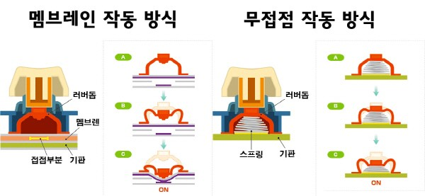
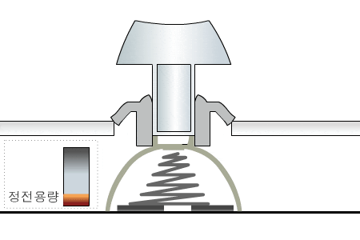
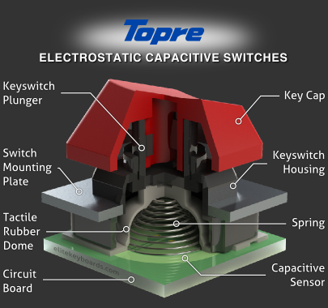
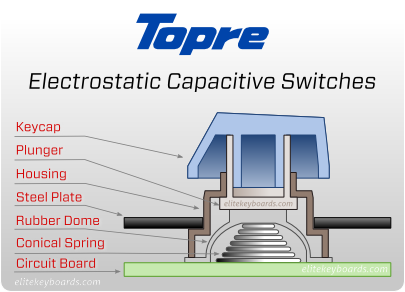
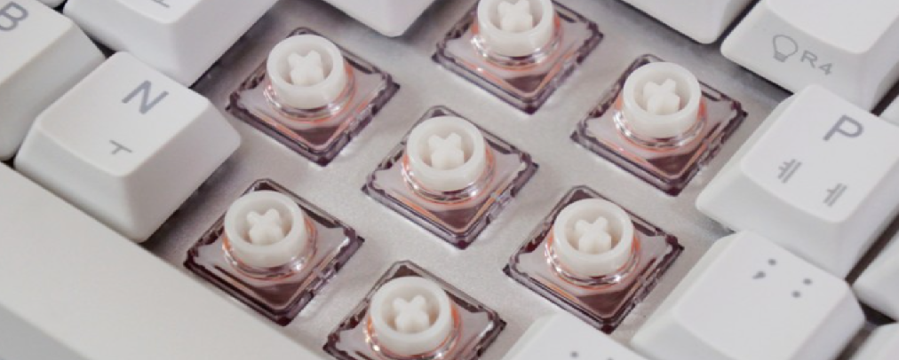
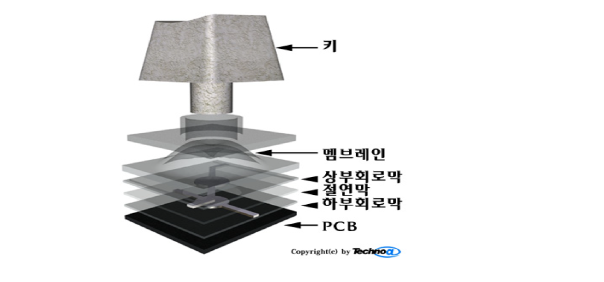

특징
  -고무 / 실리콘의 탄성을 이용한 스위치
-고무 / 실리콘이 뒤집히면서 발생하는 구분감으로 스위치의 키감을 만들어준다.
-대표적으로 토프레와 노뿌가 있으며, 사무용 멤브레인 키보드들도 비슷한 구조이다.
-대개 소음이 그렇게 크지 않으며, 토프레의 경우 저소음 토프레 스위치까지 있어 사무용으로 안성맞춤이다.
-윤활 진행 시, 스프링과 슬라이더를 주로 윤활하며 스프링 재배열에 많은 신경을 써줘야 한다.
-윤활유는 고무와 반응하지 않는 크라이톡스 윤활유를 사용해야만 한다.
토프레
-리얼포스는 토프레 사의 스위치를 사용한 하이엔드 키보드이다.
(포스기를 누를 때의 느낌을 잘 살렸다는 뜻이라고 한다.)
-토프레 사의 스위치는 리얼포스와 해피해킹에만 장착되어 판매된다.
-리얼포스는 크게 2가지, 일반과 저소음으로 나누어지며 30/45/55g의 모델이 있다.
-일반 모델은 키캡 떨림 소리와 고무 접히는 소리가 한데 어우러져 매력적이다.
-저소음 모델은 저소음 오링을 장착하여 키캡 떨리는 소리를 최소화한 제품이다. 이 또한 매력적이다.
-취향과 상황에 맞춰 30g / 45g / 55g의 키압 중 하나를 선택하면 된다. 45g이 가장 일반적인 모델이다.
-다만 30g 모델은 구분감이 약하고 흐물흐물한 느낌이라 호불호가 많이 갈리고, 55g 모델도 표기 압력과는 다르게 스위치가 상당히 무거워서 부담스러울 수도 있다. 보통 일반 55g 균등 혹은 저소음 45g 균등을 많이 선택한다.
-가격이 매우 비싸다. (일반 28만 원, 저소음 apc 33만 원)
-키감이 유동적이다. 주변 온도에 따라 변하며, 오래 사용하지 않을 시 고무가 경화되어 변할 수도 있다.
-윤활로 해결되지 않는 고무 찌걱임 소리가 발생할 수 있다.
노뿌
 콕스 / 앱코 무접점-노뿌 스위치는 토프레 스위치의 카피 버전이다.
-중국 noppoo 사에서 토프레 사의 스위치를 타겟으로 만들었다.
-토프레는 고무를 사용하였고, 노뿌는 실리콘 돔을 사용한다.
-토프레 스위치에 비해서 말랑말랑한 키감, 물 끓는 타건음이 특징이다.
-토프레가 장착된 키보드에 비해 노뿌 키보드의 가격은 매우 합리적이다. 지극히 주관적인 생각이지만 토프레는 한 달이면 질릴 것을, 노뿌는 일주일 만에 질리는 것 같다.
-토프레는 독자 스템 규격을 사용하는 키보드가 대부분이라 키캡 바꾸기가 어렵지만, 노뿌는 체리식 십자 스템을 사용하기 때문에 손쉽게 다른 키캡으로 바꿔 낄 수 있다.
멤브레인
 출처 : http://www.technoa.co.kr/news/articleView.html?idxno=43099-멤브레인 : 일반적인 사무용 키보드에 사용되는 스위치.
-삼성 구 dt-35가 키감이 좋기로 유명하다.
-값이 저렴하여 부담없이 사용할 수 있다.
-윤활 시, 멤브레인의 또다른 키감을 맛볼 수 있다.